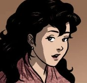

NOLI ME TANGERE CHARACTERS |
||
|---|---|---|
Ibarra |
|
|
Maria Clara |
 |
|
Father Damaso |
|
|
Elias |
|
|
Captain Tiago |
|
|
Aunt Isabel |
|
|
Father Salvi |
|
|
Don Rafael Ibarra |
|
|
Pilosopo Tasyo |
|
|
Doña Consolacion |
|
|
Sisa |
|
|
Basilio |
|
|
Crispin |
|
|
Alperes |
|
|
Donya Victorina de Espadaña |
|
|
Don Tiburcio de Espadaña |
|
GradeSaver. (2023, June 9). Noli me tangere characters. GradeSaver.
https://www.gradesaver.com/noli-me-tangere/study-guide/character-list
Noypi.com.ph. (2023, July 28). Noli me tangere characters and their traits.
https://noypi.com.ph/noli-me-tangere-characters
Wiki, C. T. N. M. T. (n.d.). Characters. Noli Me Tangere Wiki.
https://noli-me-tangere.fandom.com/wiki/Category:Characters
Wiki, C. T. M. C. a. I. (n.d.). Kapitan Tiago. Maria Clara at Ibarra Wiki.
https://mariaclaraatibarra.fandom.com/wiki/Kapitan_Tiago
Wiki, C. T. M. C. a. I. (n.d.-b). Tiya Isabel. Maria Clara at Ibarra Wiki.
https://mariaclaraatibarra.fandom.com/wiki/Tiya_Isabel
Don Rafael Ibarra. (n.d.). Personality Database.
https://www.personality-database.com/profile/500981/don-rafael-ibarra-noli-me-tngere-el-filibusterismo-mbti-personality-type
Wiki, C. T. M. C. a. I. (n.d.-a). Doña Consolacion. Maria Clara at Ibarra Wiki.
https://mariaclaraatibarra.fandom.com/wiki/Do%C3%B1a_Consolacion
Alperes. (n.d.). Personality Database.
https://www.personality-database.com/profile/500985/alperes-noli-me-tngere-el-filibusterismo-mbti-personality-type
Wiki, C. T. N. M. T. (n.d.-b). Doña Victorina. Noli Me Tangere Wiki.
https://noli-me-tangere.fandom.com/wiki/Do%C3%B1a_Victorina
Wiki, C. T. M. C. a. I. (n.d.-a). Don Tiburcio. Maria Clara at Ibarra Wiki.
https://mariaclaraatibarra.fandom.com/wiki/Don_Tiburcio